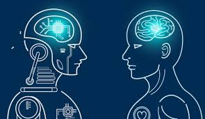
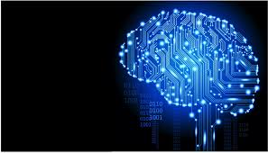
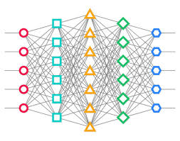
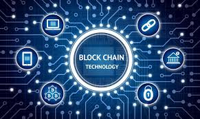
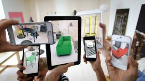
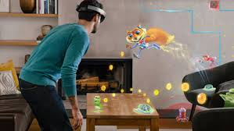
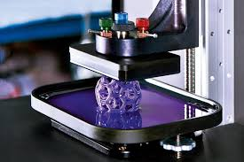

HTML5 es un lenguaje markup (de hecho, las siglas de html significan hyper text markup language) usado para estructurar y presentar el contenido para la web. ... es de hecho la quinta revisión del estándar que fue creado en 1990.
A fines del año pasado, la W3C la recomendó para transformarse en el estándar a ser usado en el desarrollo de proyectos venideros. Por así decirlo, qué es HTML5 está relacionado también con la entrada en decadencia del viejo estándar HTML 4 que se combinaba con otros lenguajes para producir los sitios que podemos ver hoy en día. con html5, tenemos otras posibilidades para explotar usando menos recursos. con html5, también entra en desuso el formato xhtml, dado que ya no sería necesaria su implementación.
Con HTML5, los navegadores como Firefox, Chrome, Explorer, Safari y más pueden saber cómo mostrar una determinada página web , saber dónde están los elementos, dónde poner las imágenes, dónde ubicar el texto.
CSS es un lenguaje para definir el estilo o la apariencia de las páginas web, escritas con html o de los documentos xml css se creó para separar el contenido de la forma, a la vez que permite a los diseñadores mantener un control mucho más preciso sobre la apariencia de las páginas.
CSS sirve para definir la estética de un sitio web en un documento externo y eso mismo permite que modificando ese documento (la hoja CSS) podamos cambiar la estética entera de un sitio web… ese es precisamente el poder de css, en otras palabras, el mismo sitio web puede variar totalmente de estética cambiando solo la css, sin tocar para nada los documentos html o jsp o asp que lo componen, ya con css3 se suman muchas nuevos efectos que harán de la que la parte visual de nuestra página sea mucho más agradable y llamativa, como sombras, transformaciones de figuras, creación sencilla de bordes y efectos 3d.
CSS3 es la última evolución del lenguaje de las hojas de estilo en cascada (cascading style sheets), y pretende ampliar la versión css2.1. trae consigo muchas novedades altamente esperadas , como las esquinas redondeadas, sombras, gradientes , transiciones o animaciones, y nuevos layouts como multi-columnas, cajas flexibles o maquetas de diseño en cuadrícula (grid layouts).
Las partes experimentales son particulares para cada navegador y deberían ser evitadas en entornos de producción, o usadas con extrema precaución, ya que tanto la sintaxis como la semántica pueden cambiar en el futuro.

JavaScript® es el lenguaje interpretado orientado a objetos desarrollado por Netscape que se utiliza en millones de páginas web y aplicaciones de servidor en todo el mundo.JavaScript de Netscape es un superconjunto del lenguaje de scripts estándar de la edición de ECMA-262 3 (ECMASCRIPT) que presenta sólo leves diferencias respecto a la norma publicada.
Las capacidades dinámicas de Javascript incluyen construcción de objetos en tiempo de ejecución, listas variables de parámetros, variables que pueden contener funciones, creación de scripts dinámicos (mediante eval), introspección de objetos (mediante for ... in), y recuperación de código fuente (los programas de javascript pueden decompilar el cuerpo de funciones a su código fuente original).
Los objectos intrínsecos son number, string, boolean, date, regexp y math.
Otra aplicación común de JavaScript es como lenguaje interpretado de lado del servidor (web). Un servidor web escrito en javascript podría exponer objetos host que representen objetos de una petición y una respuesta http, los cuales podrían ser manipulados por un programa en javascript para generar páginas web de manera dinámica.

Las Progressive Web Apps (pwa) son un tipo de aplicaciones que se podrían definir como “página web que se aprovecha de las tecnologías webs las cuales tiene acceso para proponer una experiencia móvil similar a una aplicación nativa”. al final, una progressive web app, es una nueva generación de aplicaciones que están a medio camino entre una web y una app, ya que tienen lo mejor de los dos mundos. además, incrementan su funcionalidad en base a las capacidades del dispositivo en el que se ejecutan, de ahí que se denominen con la palabra “progresiva”.
Esta definición aunque es bastante amplia, resume muy bien que es una Progressive Web Apps (PWA).
Respecto a las características de una Progressive Web App (PWA) nos encontramos principalmente con las siguientes:
• Velocidad de carga optimizada al máximo
• Optimización del rendimiento en dispositivos móviles
• Contenido rastreable e indexable
• Posibilidad de usar notificaciones push, tal como ya hacen las app nativas. (En este sentido, hay una consideración que debemos tener en cuenta: que no es compatible con todos los navegadores, especialmente si utilizamos el navegador Safari de Apple)
• Posibilidad de agregar, en el escritorio o en el menú de tu dispositivo mobile, un icono que te lleva directamente a la PWA (sería más o menos como el icono de una aplicación)
Además, cuenta con unas características adicionales muy interesantes, tales como:
• Posibilidad de acceder al portal fuera de la red (sin conexión)
• Uso mandatorio del HTTPS para todas las solicitudes
• Dynamic Caching & Service Workers
Uno de los elementos más importantes es el manifesto de la aplicación. Es un archivo muy sencillo (formato json) que te permite controlar cómo se verá tu aplicación en las áreas donde normalmente los usuarios tienen aplicaciones nativas.

La Inteligencia Artificial es el nombre genérico que se da a una serie de tecnologías que sirven para emular características o capacidades que tradicionalmente estaban ligadas de manera exclusiva al intelecto humano.
En 1956, John McCarthy acuñó la expresión «inteligencia artificial», y la definió como "...la ciencia e ingenio de hacer máquinas inteligentes, especialmente programas de cómputo inteligentes" .
En ciencias de la computación, una máquina «inteligente» ideal es un agente racional flexible que percibe su entorno y lleva a cabo acciones que maximicen sus posibilidades de éxito en algún objetivo o tarea.1 Coloquialmente, el término inteligencia artificial se aplica cuando una máquina imita las funciones «cognitivas» que los humanos asocian con otras mentes humanas, como por ejemplo: "aprender" y "resolver problemas".
A medida que las máquinas se vuelven cada vez más capaces, tecnología que alguna vez se pensó que requería de inteligencia se elimina de la definición. Por ejemplo, el reconocimiento óptico de caracteres ya no se percibe como un ejemplo de la "inteligencia artificial" habiéndose convertido en una tecnología común.3 avances tecnológicos todavía clasificados como inteligencia artificial son los sistemas de conducción autónomos o los capaces de jugar al ajedrez o al go.

El Machine Learning conocido en español como aprendizaje automático o aprendizaje de máquina, nació como una idea ambiciosa de la IA en la década de los 60. para ser más exactos, fue una subdisciplina de la ia, producto de las ciencias de la computación y las neurociencias
Lo que esta rama pretendía estudiar era el reconocimiento de patrones (en los procesos de ingeniería, matemáticas, computación, etc.) y el aprendizaje por parte de las computadoras. En los albores de la IA, los investigadores estaban ávidos por encontrar una forma en la cual las computadoras pudieran aprender únicamente basándose en datos.
Si esta definición resultó muy trivial, pongámoslo de esta forma: es la idea de que existen algoritmos que pueden darte hallazgos o conclusiones relevantes obtenidas de un conjunto de datos, sin que el ser humano tenga que escribir instrucciones o códigos para esto.
De acuerdo, pero ¿qué es un algoritmo ? pues no es otra cosa que una secuencia o serie de instrucciones, que representan la solución a un determinado problema.

El aprendizaje profundo (en inglés, deep learning) es un conjunto de algoritmos de clase aprendizaje automático (en inglés, machine learning) que intenta modelar abstracciones de alto nivel en datos usando arquitecturas compuestas de transformaciones no lineales múltiples. el aprendizaje profundo es parte de un conjunto más amplio de métodos de aprendizaje automático basados en asimilar representaciones de datos. una observación (por ejemplo, una imagen) puede ser representada en muchas formas (por ejemplo, un vector de píxeles), pero algunas representaciones hacen más fácil aprender tareas de interés (por ejemplo, "¿es esta imagen una cara humana?" ) sobre la base de ejemplos, y la investigación en este área intenta definir qué representaciones son mejores y cómo crear modelos para reconocer estas representaciones.
Varias arquitecturas de aprendizaje profundo, como redes neuronales profundas, redes neuronales profundas convolucionales, y redes de creencia profundas , han sido aplicadas a campos como visión por computador, reconocimiento automático del habla, y reconocimiento de señales de audio y música, y han mostrado producir resultados de vanguardia en varias tareas.

Las redes neuronales son un campo muy importante dentro de la inteligencia artificial. inspirándose en el comportamiento conocido del cerebro humano (principalmente el referido a las neuronas y sus conexiones), trata de crear modelos artificiales que solucionen problemas difíciles de resolver mediante técnicas algorítmicas convencionales.
Fue Ramón y Cajal (1888) quién descubrió la estructura celular (neurona) del sistema nervioso. defendió la teoría de que las neuronas se interconectaban entre sí de forma paralela, y no formando un circuito cerrado como el sistema sanguíneo.
Una neurona consta de un cuerpo celular (soma) de entre 10 y 80 mm, del que surge un denso árbol de ramificaciones (dendritas) y una fibra tubular (axón) de entre 100 mm y un metro.
El modelo de Rumelhart y McClelland (1986) define un elemento de proceso (EP), o neurona artificial, como un dispositivo que a partir de un conjunto de entradas, xi(i=1...n) o vector x, genera una única salida y.
Una criptomoneda , criptodivisa (del inglés cryptocurrency) o criptoactivo es un medio digital de intercambio.123 la primera criptomoneda que empezó a operar fue el bitcoin en 20094 y, desde entonces, han aparecido muchas otras con diferentes características y protocolos como litecoin, ethereum, ripple, dogecoin.
Las criptomonedas hacen posible el llamado internet del valor, también conocido por las siglas IoV (del inglés internet of value), también llamado Internet del dinero: son aplicaciones de Internet que permiten el intercambio de valor en forma de criptomonedas. Este valor pueden ser contratos, propiedad intelectual, acciones o cualquier propiedad de algo con valor. Las cosas de valor ya se podían intercambiar antes usando sistemas de pago como Paypal.
Sin embargo la diferencia entre pagar con algo como Paypal y pagar con una criptomoneda consiste en que pagar con paypal requiere que el pago se haga a través de redes privadas como las de las tarjetas de crédito y bancos, mientras que el pago usando criptomonedas no tiene intermediarios. va directamente del comprador al vendedor. de esta forma, se tiene un sistema de transferencia universal de valor, libre de intermediaciones.
Este sistema:
• Reduce el coste de la transacción, ya que no hay intermediación.
• Reduce los tiempos. Aunque los pagos por Internet son rápidos, las liquidaciones entre las partes llevan su tiempo y el vendedor recibe el importe días después del pago. Con las criptomonedas, la demora es del orden de minutos.
• Elimina la necesidad de usar agentes financieros para realizar transacciones.

Una cadena de bloques o cadena articulada, conocida en inglés como blockchain, es una estructura de datos en la que la información contenida se agrupa en conjuntos (bloques) a los que se les añade meta informaciones relativas a otro bloque de la cadena anterior en una línea temporal, de manera que gracias a técnicas criptográficas, la información contenida en un bloque sólo puede ser repudiada o editada modificando todos los bloques posteriores. esta propiedad permite su aplicación en entorno distribuido de manera que la estructura de datos blockchain puede ejercer de base de datos pública no relacional que contenga un histórico irrefutable de información.
En la práctica ha permitido, gracias a la criptografía asimétrica y las funciones de resumen o hash, la implementación de un registro contable (ledger) distribuido que permite soportar y garantizar la seguridad de dinero digital. siguiendo un protocolo apropiado para todas las operaciones efectuadas sobre la blockchain, es posible alcanzar un consenso sobre la integridad de sus datos por parte de todos los participantes de la red sin necesidad de recurrir a una entidad de confianza que centralice la información.
Por las razones anteriores, la tecnología blockchain es especialmente adecuada para escenarios en los que se requiera almacenar de forma creciente datos ordenados en el tiempo, sin posibilidad de modificación ni revisión y cuya confianza pretenda ser distribuída en lugar de residir en una entidad certificadora. Este enfoque tiene diferentes aspectos:
• Almacenamiento de datos: se logra mediante la replicación de la información de la cadena de bloques
• Transmisión de datos: se logra mediante redes de pares.
• Confirmación de datos: se logra mediante un proceso de consenso entre los nodos participantes. El tipo de algoritmo más utilizado es el de prueba de trabajo en el que hay un proceso abierto competitivo y transparente de validación de las nuevas entradas llamada minería. El concepto de cadena de bloque fue aplicado por primera vez en 2009 como parte de Bitcoin.
Los datos almacenados en la cadena de bloques normalmente suelen ser transacciones (p. ej. financieras) por eso es frecuente llamar a los datos transacciones. sin embargo, no es necesario que lo sean. realmente podríamos considerar que lo que se registran son cambios atómicos del estado del sistema. por ejemplo una cadena de bloques puede ser usada para estampillar documentos y asegurarlos frente a alteraciones.
La seguridad informática , también conocida como ciberseguridad o seguridad de tecnologías de la información, es el área relacionada con la informática y la telemática que se enfoca en la protección de la infraestructura computacional y todo lo relacionado con esta y, especialmente, la información contenida en una computadora o circulante a través de las redes de computadoras.1 para ello existen una serie de estándares, protocolos, métodos, reglas, herramientas y leyes concebidas para minimizar los posibles riesgos a la infraestructura o a la información.
La ciberseguridad comprende software (bases de datos, metadatos, archivos), hardware, redes de computadoras y todo lo que la organización valore y signifique un riesgo si esta información confidencial llega a manos de otras personas, convirtiéndose, por ejemplo, en información privilegiada.
La definición de seguridad de la información no debe ser confundida con la de «seguridad informática», ya que esta última solo se encarga de la seguridad en el medio informático, pero la información puede encontrarse en diferentes medios o formas, y no solo en medios informáticos. La seguridad informática es la disciplina que se encarga de diseñar las normas, procedimientos, métodos y técnicas destinados a conseguir un sistema de información seguro y confiable.
Puesto simple, la seguridad en un ambiente de red es la habilidad de identificar y eliminar vulnerabilidades. Una definición general de seguridad debe también poner atención a la necesidad de salvaguardar la ventaja organizacional, incluyendo información y equipos físicos, tales como los mismos computadores. Nadie a cargo de seguridad debe determinar quién y cuándo puede tomar acciones apropiadas sobre un ítem en específico. Cuando se trata de la seguridad de una compañía, lo que es apropiado varía de organización en organización. Independientemente, cualquier compañía con una red debe tener una política de seguridad que se dirija a la conveniencia y la coordinación.
La realidad virtual se podría definir como un sistema informático que genera en tiempo real representaciones de la realidad, que de hecho no son más que ilusiones ya que se trata de una realidad perceptiva sin ningún soporte físico y que únicamente se da en el interior de los ordenadores.
La simulación que hace la realidad virtual se puede referir a escenas virtuales, creando un mundo virtual que sólo existe en el ordenador de lugares u objetos que existen en la realidad. también permite capturar la voluntad implícita del usuario en sus movimientos naturales proyectándolos en el mundo virtual que estamos generando, proyectando en el mundo virtual movimientos reales.
Además, también nos permite hundirnos completamente en un mundo virtual, desconectando los sentidos completamente de la realidad teniendo la sensación la persona que está dentro de que la realidad corresponde en el mundo virtual.
Las aplicaciones que en la actualidad encontramos de la realidad virtual a actividades de la vida cotidiana son muchas y diversas. Hay que destacar: la reconstrucción de la herencia cultural, la medicina, la simulación de multitudes y la sensación de presencia.

La Realidad Aumentada (ra) es una tecnología que permite superponer elementos virtuales sobre nuestra visión de la realidad. cada vez más demandada, en 2020 se convertirá en un negocio que roce los 120.000 millones de dólares a nivel mundial.
El término lo acuñó en 1992 el científico e investigador Thomas P. Caudell mientras desarrollaba uno de los aviones más famosos del mundo: el Boeing 747. Caudell observó que los operarios encargados del ensamblaje de la nueva aeronave perdían demasiado tiempo interpretando las instrucciones y pensó: ¿Qué pasaría si tuvieran acceso a una pantalla que les guiase durante la instalación? El invento no triunfó, pero en ese preciso momento nacía el concepto de Realidad Aumentada (RA).
Surgía entonces y no en el verano de 2016, como muchos creemos, cuando nos vimos contagiados por la fiebre de pokémon go, un videojuego que consistía en buscar y capturar diferentes personajes de la saga japonesa y que, en su momento más álgido, alcanzó la astronómica cifra de 45 millones de usuarios diarios activos.
Pokémon GO popularizó la RA, la acercó al gran público —a todos los públicos—, pero por aquel entonces ya eran muchas las empresas de muy diversos sectores (sanidad, educación, arquitectura, servicios, retail,etc.) que la empezaban a utilizar con el objetivo de crear experiencias de valor para sus clientes.

La realidad mixta (rm), también llamada a veces realidad híbrida, es la combinación de realidad virtual y realidad aumentada. esta combinación permite crear nuevos espacios en los que interactúan tanto objetos y />o personas reales como virtuales. Es decir, se puede considerar como una mezcla entre la realidad, realidad aumentada, virtualidad aumentada y realidad virtual.
El término realidad mixta no debe confundirse con el de realidad aumentada o RA. La realidad aumentada genera los estímulos a tiempo real para la interacción del usuario, los cuales se superponen sobre el entorno físico de este, mientras que la realidad mixta no sólo permite la interacción del usuario con el entorno virtual sino que también permite que objetos físicos del entorno inmediato del usuario sirvan como elementos de interacción con el entorno virtual.
Como ya se ha dicho, la realidad mixta permite la incorporación de objetos gráficos generados por ordenador en una escena tridimensional del mundo real o bien la incorporación de objetos reales en un mundo virtual.
Las principales características son tres:
• Permite combinar ámbitos reales y virtuales.
• Es una tecnología interactiva y en tiempo real.
• Se puede registrar en tres dimensiones.
El principio de funcionamiento de esta tecnología es muy complejo, pero a grandes rasgos se podría entender de las siguientes maneras:
1. En el caso en que se pretenda introducir un objeto en un mundo virtual, primero se procede a registrar al usuario u objeto en tiempo real y en imágenes tridimensionales; estas imágenes en 3D se podrán introducir en el mundo virtual. El usuario podrá ver el resultado mediante una interfaz el ordenador. hasta el momento, esta aplicación se ha utilizado mayoritariamente en videojuegos, como el eyetoy para la consola playstation 2 de sony.
2. En cambio, en el caso de la introducción de objetos virtuales en el mundo real, el sistema se basa en crear una interfaz con marcas en las que un ordenador puede responder habiendo realizado una previa lectura de éstas mediante una cámara de vídeo o cámara web. Las marcas de la interfaz suelen ser impresiones en blanco y negro sobre un soporte rígido. La información que capta la cámara de la interfaz será el código con el que el ordenador podrá generar las imágenes virtuales correspondientes y las pueda situar en la escena virtual según la posición y rotación de las marcas.

Desde la llegada de Internet a nuestras vidas, éste ha evolucionado de una forma veloz y apabullante, desde aquellos rudimentarios módems de 56 KB hasta las rapidísimas y eficaces líneas de fibra óptica actuales. A día de hoy podemos conectar a Internet nuestros móviles, impresoras, smart tv, cámaras vía ip, gps y multitud de dispositivos electrónicos que poseen esta funcionalidad, pero, ¿hemos tocado techo o esto no es más que el inicio de una nueva era internet?
Desde hace ya unos años se empezó a hablar del IoT (Internet de las cosas), no siendo más que una apuesta de futuro y comenzando a ser en la actualidad una absoluta realidad.
Cada vez es más frecuente encontrarse con nuevos dispositivos capaces de conectarse a Internet y permitir al usuario un control y manejo de forma remota desde cualquier parte del mundo, pero esto no ha hecho más que comenzar.
Podríamos definir el Internet de las Cosas como la consolidación a través de la red de redes de una "red" que alojase una gran multitud de objetos o dispositivos, es decir, poder tener conectada a esta todas las cosas de este mundo como podrían ser vehículos, electrodomésticos, dispositivos mecánicos, o simplemente objetos tales como calzado, muebles, maletas, dispositivos de medición, biosensores, o cualquier objeto que nos podamos imaginar.

Un consenso común es describir a la mecatrónica como una disciplina integradora de las áreas de mecánica,electrónica e informática cuyo objetivo es proporcionar mejores productos, procesos y sistemas. la mecatrónica no es, por tanto, una nueva rama de la ingeniería, sino un concepto recientemente desarrollado que enfatiza la necesidad de integración y de una interacción intensiva entre diferentes áreas de la ingeniería.
Con base en lo anterior, se puede hacer referencia a la definición propuesta por J.A. Rietdijk:"Mecatrónica es la combinación sinérgica de la ingeniería mecánica de precisión, de la electrónica, del control automático y de los sistemas para el diseño de productos y procesos", la cual busca crear maquinaria más compleja para facilitar las actividades del ser humano a través de procesos electrónicos en la industria mecánica principalmente. existen, claro está, otras versiones de esta definición, pero ésta claramente enfatiza que la mecatrónica está dirigida a las aplicaciones y al diseño.
La mecatrónica nace para suplir tres necesidades latentes; la primera, encaminada a automatizar la maquinaría y lograr así procesos productivos ágiles y confiables; la segunda crear productos inteligentes, que respondan a las necesidades del mundo moderno; y la tercera, por cierto muy importante, armonizar entre los componentes mecánicos y electrónicos de las máquinas, ya que en muchas ocasiones, era casi imposible lograr que tanto mecánica como electrónica manejaran los mismos términos y procesos para hacer o reparar equipos.
Un ingeniero en Mecatrónica es un profesional con amplio conocimiento práctico y multidisciplinario capaz de integrar y desarrollar sistemas automatizados que involucren tecnologías de varios campos de la ingeniería. Este especialista entiende sobre el funcionamiento de los componentes mecánicos, eléctricos, electrónicos y computacionales de los procesos industriales; y que tiene como referencia el desarrollo sostenible.

Una impresora 3d es una máquina capaz de realizar réplicas de diseños en 3d, creando piezas o maquetas volumétricas a partir de un diseño hecho por ordenador, descargado de internet o recogido a partir de un escáner 3d.
Estas máquinas se encargan de convertir en un objeto real los diseños 3D que una persona puede hacer con ayuda de la computadora. Para llegar a esto utilizan plástico líquido (u otros materiales) en vez de la tinta a la que estamos acostumbrados, que tras la impresión se solidifica y crea el objeto. Normalmente son máquinas grandes que pueden costar decenas de miles de dólares, pero el avance tecnológico las está volviendo disponibles al público general. Vamos, ¡es como tener una fábrica en casa!. Desde Tecnonauta TV explicamos en vídeo como funcionan.
Se usan mucho para hacer prototipos rápidos de productos industriales, como partes de autos o prótesis para medicina1. También es común en arquitectura. Lo novedoso es que cuando varios proyectos actuales las popularicen, uno podría poner su propio objeto diseñado en internet y el usuario tener una copia real con solo presionar un botón. O hasta incluso usarlas para crear objetos que se usen en el día a día o replicarlos.
Ejemplos más domésticos serían crear tus propios adornos para luego pintarlos, figuras de tu personaje preferido... hay demasiados usos, así que recopilamos los más interesantes en esta nota (tocamos ejemplos tan dispares como fabricar pistolas o comida). Sn embargo no estas limitado a aobjetos simples, puedes crear cosas muy complejas si imprimes las partes por separado. Si ya dispones de una impresora, recomendamos la web Thingiverse, donde la comunidad comparte diseños de sus mejores creaciones que puedes descargar e imprimir.

Las redes de quinta generación (5G) están actualmente en desarrollo y saldrán al mercado a comienzos del 2020. En comparación con tecnología 4g lte actual, la 5g tiene como objetivo llegar a alta velocidad (1 gbps), baja potencia y baja latencia (1ms o menos), para el iot masivo, el internet táctil y la robótica.
la red inalámbrica de la próxima (5ta) generación abordará la evolución más allá del internet móvil, y alcanzará al Internet de las Cosas masivo hacia 2020. La evolución más notable en comparación con las redes 4G y 4.5G (LTE avanzado) actuales es que, aparte del aumento en la velocidad de los datos, los nuevos casos de uso del Internet de las Cosas y de la comunicación requerirán nuevos tipos de desempeño mejorado; como la “latencia baja”, que brinda una interacción en tiempo real a los servicios que utilizan la nube, lo que resulta clave, por ejemplo, para los vehículos autónomos. Además, el bajo consumo de energía permitirá que los objetos conectados funcionen durante meses o años sin la necesidad de la intervención humana.
A diferencia de los servicios actuales del Internet de las Cosas que sacrifican rendimiento para sacar el máximo provecho a tecnologías inalámbricas existentes (3g, 4g, wifi, bluetooth, zigbee, etc.), las redes 5g estarán diseñadas para alcanzar el nivel de rendimiento que necesita el internet de las cosas masivo. esto hará posible que se perciba un mundo completamente ubicuo y conectado.
La tecnología 5g está caracterizada por 8 especificaciones
• Una tasa de datos de hasta 10Gbps - > de 10 a 100 veces mejor que las redes 4G y 4.5G
• Latencia de 1 milisegundo
• Una banda ancha 1000 veces más rápida por unidad de área
• Hasta 100 dispositivos más conectados por unidad de área (en comparación con las redes 4G LTE)
• Disponibilidad del 99.999%
• Cobertura del 100%
• Reducción del 90% en el consumo de energía de la red
• Hasta 10 diez años de duración de la batería en los dispositivos IoT (Internet de las Cosas) de baja potencia
es la quinta revisión del lenguaje HTML. Esta nueva versión (aún en desarrollo), y en conjunto con CSS3, define los nuevos estándares de desarrollo web, rediseñando el código para resolver problemas y actualizándolo así a nuevas necesidades. No se limita solo a crear nuevas etiquetas o atributos, sino que incorpora muchas características nuevas y proporciona una plataforma de desarrollo de complejas aplicaciones web .
Hojas de Estilo en Cascada (CSS) es un lenguaje de estilo de hojas usado para describir la presentación de las páginas web. CSS permite la separación del contenido del documento de la presentación del documento (disposición, colores, fuentes, etcétera).
es un lenguaje usado para definir la presentación de un documento estructurado escrito en HTML o XML (y por extensión en XHTML). El W3C(World Wide Web Consortium) es el encargado de formular la especificación de las hojas de estilo que servirán de estándar para los agentes de usuario o navegadores.
JavaScript se utiliza principalmente del lado del cliente (es decir, se ejecuta en nuestro ordenador, no en el servidor) permitiendo crear efectos atractivos y dinámicos en las páginas web. Los navegadores modernos interpretan el código JavaScript integrado en las páginas web.
Las Progressive Web Apps (PWA) son un tipo de aplicaciones que se podrían definir como: “Página web que se aprovecha de las tecnologías webs a las cuales tiene acceso para proponer una experiencia móvil similar a una aplicación nativa”. Al final, una Progressive Web App, es una nueva generación de aplicaciones que están a medio camino entre una web y una app, ya que tienen lo mejor de los dos mundos. Además, incrementan su funcionalidad en base a las capacidades del dispositivo en el que se ejecutan, de ahí que se denominen con la palabra “progresiva”.
Es una serie de tecnologías que sirven para emular características o capacidades que tradicionalmente estaban ligadas de manera exclusiva al intelecto humano.
Es la idea de que existen algoritmos que pueden darte hallazgos o conclusiones relevantes obtenidas de un conjunto de datos, sin que el ser humano tenga que escribir instrucciones o códigos para esto.
El aprendizaje profundo es parte de un conjunto más amplio de métodos de aprendizaje automático basados en asimilar representaciones de datos. Una observación (por ejemplo, una imagen) puede ser representada en muchas formas (por ejemplo, un vector de píxeles), pero algunas representaciones hacen más fácil aprender tareas de interés (por ejemplo, "¿es esta imagen una cara humana?") sobre la base de ejemplos, y la investigación en este área intenta definir qué representaciones son mejores y cómo crear modelos para reconocer estas representaciones.
Las Redes Neuronales son un campo muy importante dentro de la Inteligencia Artificial. Inspirándose en el comportamiento conocido del cerebro humano (principalmente el referido a las neuronas y sus conexiones), trata de crear modelos artificiales que solucionen problemas difíciles de resolver mediante técnicas algorítmicas convencionales.
Son aplicaciones de Internet que permiten el intercambio de valor en forma de criptomonedas. Este valor pueden ser contratos, propiedad intelectual, acciones o cualquier propiedad de algo con valor. Las cosas de valor ya se podían intercambiar antes usando sistemas de pago como Paypal.
Es una estructura de datos en la que la información contenida se agrupa en conjuntos (bloques) a los que se les añade meta informaciones relativas a otro bloque de la cadena anterior en una línea temporal, de manera que gracias a técnicas criptográficas, la información contenida en un bloque sólo puede ser repudiada o editada modificando todos los bloques posteriores. Esta propiedad permite su aplicación en entorno distribuido de manera que la estructura de datos blockchain puede ejercer de base de datos pública no relacional que contenga un histórico irrefutable de información.
La seguridad informática es la disciplina que se encarga de diseñar las normas, procedimientos, métodos y técnicas destinados a conseguir un sistema de información seguro y confiable.
Un sistema informático que genera en tiempo real representaciones de la realidad, que de hecho no son más que ilusiones ya que se trata de una realidad perceptiva sin ningún soporte físico y que únicamente se da en el interior de los ordenadores.
Es una tecnología que permite superponer elementos virtuales sobre nuestra visión de la realidad. Cada vez más demandada, en 2020 se convertirá en un negocio que roce los 120.000 millones de dólares a nivel mundial.
Es la combinación de realidad virtual y realidad aumentada. Esta combinación permite crear nuevos espacios en los que interactúan tanto objetos y/o personas reales como virtuales. Es decir, se puede considerar como una mezcla entre la realidad, realidad aumentada, virtualidad aumentada y realidad virtual.
La consolidación a través de la red de redes de una "red" que alojase una gran multitud de objetos o dispositivos, es decir, poder tener conectada a esta todas las cosas de este mundo como podrían ser vehículos, electrodomésticos, dispositivos mecánicos, o simplemente objetos tales como calzado, muebles, maletas, dispositivos de medición, biosensores, o cualquier objeto que nos podamos imaginar.
Es la combinación sinérgica de la ingeniería mecánica de precisión, de la electrónica, del control automático y de los sistemas para el diseño de productos y procesos", la cual busca crear maquinaria más compleja para facilitar las actividades del ser humano a través de procesos electrónicos en la industria mecánica principalmente. Existen, claro está, otras versiones de esta definición, pero ésta claramente enfatiza que la mecatrónica está dirigida a las aplicaciones y al dise
Máquina capaz de realizar réplicas de diseños en 3D, creando piezas o maquetas volumétricas a partir de un diseño hecho por ordenador, descargado de internet o recogido a partir de un escáner 3D
A diferencia de los servicios actuales del Internet de las Cosas que sacrifican rendimiento para sacar el máximo provecho a las tecnologías inalámbricas existentes (3G, 4G, WiFi, Bluetooth, Zigbee, etc.), las redes 5G estarán diseñadas para alcanzar el nivel de rendimiento que necesita el Internet de las Cosas masivo. Esto hará posible que se perciba un mundo completamente ubicuo y conectado.